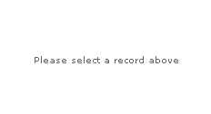

Changing Chart Messages |
||||||||||
FusionCharts Free allows you to change the various messages that gets displayed to the user like "No data to display", "Loading Chart", "Retrieving data" etc. The following attributes define the different messages for the chart: |
||||||||||
|
||||||||||
Let's quickly see an example where we change the chart's no data to display message. This can be effectively useful when you want to start the chart with empty data and then populate data on a user interaction. To change the "No data to display message", you'll need to use the following HTML code: |
||||||||||
<div id="chart1div"> |
||||||||||
| In the above code, we're first changing the "No data to display.." message of the chart. Thereafter, we're initializing the chart with empty <graph> element. When you run this chart, you'll get the following message instead of the normal message, which is way more intuitive for the user: | ||||||||||
|  |